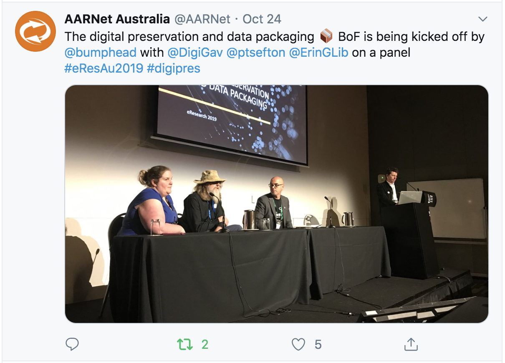
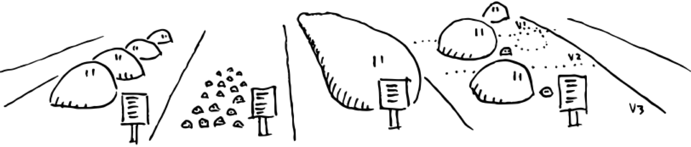

eResearch Australasia 2019 trip report
2019-11-07
By Mike Lynch and Peter Sefton
I'm re-posting / self-archiving this from the UTS eResearch Blog.
Mike Lynch and Peter Sefton attended the 2019 eResearch Australasia conference in Brisbane from 22-24 October 2019, where we presented a few things - and a pre-conference summit on the 21st held by the Australian Research Data Commons, where Mike presented our report from our small discovery project on scalable repository technology. UTS paid for the trip.
What we presented - our work on Simple Scalable Research Data Repositories
We've posted fleshed-out versions of our conference papers as usual. Mike presented a short version of ARDC funded work on data repositories at both the the summit and the conference and Peter had also put in an abstract for longer version which is less technically focussed and gives more of the context for why this work is important.
Peter presented an update on our ongoing work on describing and packaging research data - this time focussing on the new merged standard Research Object Crate(RO-Crate) and looking at what's coming next.
Diversity breakfast
I (Mike) went to the breakfast given in honour of the late Dr Jacky Pallas, a senior figure in the eResearch community who had given a keynote at last year's eResearch Australasia
The speaker was Dr Toni Collis, a research software engineer and director of Women in High Performance Computing, on how lack of diversity is damaging your research, making the point that diverse research and support teams can be demonstrated to be more effective in terms of performance, and the importance of equity, diversity and inclusivity in attracting and retaining talent.
Research as a primary function of Electronic Health Records
Prof Nikolajz Zeps' presentation was one of a couple of talks which sold themselves as being provocative, in that they were arguing for a loosening of traditional, restrictive health care ethics and consent practices so that data could be made more readily available for research. He made the point that data sharing is very difficult in the Australian healthcare system not just because of ethical restrictions but because the system is so fragmented. He argued for an integration of research and clinical data consent and management practices, which would allow the information flows required for medical research to be used for the health care system itself to better monitor the effectiveness of treatments and patient outcomes. Moving the consent process from one of research ethics to clinical ethics can make things simpler, in terms of administration.
(I was less impressed by the other provocative keynote in which the speaker said "no-one ever died as the result of a health-care data breach", which I thought was a bit of posturing, even though it got applause from some of the audience.)
Notable presentations
Galaxy Australia and the Australian Bioinformatic Commons
These two presentations were part of the bioinformatics stream, about the Australian node of the global Galaxy workflow and computational platform, and the Australian BioCommons Pathfinder Project.
9 Reproducible Research Things
Amanda Miotto from Griffith University's eResearch team presented on running workshops to introduce researchers to good reproducibility practice which focussed on immediate benefits, like safeguarding a research team against individual members leaving or falling ill, and practical steps.
The workshop materials are available on GitHub
Physiome Journal
An interesting presentation by Karin Lundengård of the Auckland Bioengineering Institute about Physiome Journal, which will publish validated and reproducible mathematical models of physiological processes. The models will also be made available as Jupyter notebooks and shared on the Gigantum platform.
HASS BOF
A lot of what we spoke about in this BOF, which was chaired by Ingrid Mason, echoed what I (Mike) had heard the week before at a Big Data for the Digital Humanities symposium in Canberra which was organised by the ARDC and AARNet (and which I should write a blog post about).
The challenges faced by digital humanities researchers and support staff mirror one another - researchers are unsure of the right way to engage with technical staff and vice versa, and good collaboration is too labour-intensive to be sustainable if it's going to be spread beyond a minority of researchers who are already linked in to support networks.
This gave me a kind of wistful feeling about an earlier keynote from Dell about machine learning in medical science, because the speaker was very enthusiastic about moving HPC tools out of the realm where researchers needed to become technology experts to use them at all, into something more like commodity software. Although there are some areas of the humanities where this sort of thing is starting to happen - transcription is one which came up both in Canberra and Brisbane.
Data Discovery
I (Peter) chaired a session on Data Discovery with a couple of lead-in talks that outlined what's going on in the world of generic research data discovery, leading into a discussion.
From our viewpoint at UTS it was useful to get confirmation that discovery services are converging on using Schema.org for high-level description of data sets, for indexing by other services. Which is good, because that's the horse we bet on at UTS. It's being used by both Research Data Australia (RDA) and the new player Google dataset search (that's run by a tiny team apparently, but it will have a huge impact on how everyone has to structure their metadata).
Amir Aryani (Swinburne) and Melroy Almeida (Australian Access Federation) presented on ORCID graph looking at collaboration networks. This is testament to the power of using strong, URI-based identifiers, once you start doing that, metadata changes from an un-reliable soup of differently spelled ambiguous names, to something you can do real analytics on.
Adrian Burton (ARDC, ex ANDS) has been dealing with metadata a long time - he put it that the Schema.org approach had won, and suggested that this might be a bit of a loss. The RIF-CS standard that ANDS inherited and built RDA around had a entity based model, with Collections, Parties, Activities and services (based on ISO 2146) rather than simple flat name-value metadata. I agree that the entity model was a strength of RIF-CS But actually, for those that want to convey rich context about data, then schema.org with linked data can do everything RIF-CS can, more elegantly and with more detail. See the work we've been doing on RO-Crate which takes things to a deeper level with descriptions of files and (soon) even variables inside files including provenance chains (what people and equipment did to make those files from observations, or other files).
The leaders of that session have done a follow up survey, so I think they'll be putting out more info soon.
Preservation
The RO-Crate talk I gave (Peter here) was in a stream on Digital Preservation and data packaging.
Erin Gallant and Gavin Kennedy, also from AARNet about digital preservation.
I was talking, not taking notes, but we discussed what the research community and cultural collections folks can learn from each other - actually I think we made some of the same mistakes, both the eResearch community and GLAM sector invested in big silos which ended up not just storing data, but making it difficult to move, re-use. To labour the metaphor a bit, silos have small holes in the bottom, so getting data in and out is slow.
Mike's diagram of an OCFL Repository shows an alternative approach - instead of putting data in a container with constricted ingress and egress, lay it all out in the open. I'm not an expert in preservation systems, but I do know that that's the approach taken by the open source Archivematica preservation system (Note: I've done a bit of work for Artefactual systems which looks after it), it works as an application that sits beside a set of files on disk - if needed you can use the grandparent of all APIs, that is file operations to fetch data. All of our talks we gave, linked above, were about this idea in one way or another.

Trusted Repository certification - one for the UTS Roadmap
I (Peter again) attended a session MCed by Richard Ferrers from ARDC with contributions from people from a range of institutions and repositories who are part of an ARDC community of practice.
They talked about the Core Trust Seal repository certification program - and the process of getting certified.
Here's some background on CTS:
Core Certification and its Benefits
Nowadays certification standards are available at different levels, from a core level to extended and formal levels. Even at the core level, certification offers many benefits to a repository and its stakeholders. Core certification involves a minimally intensive process whereby data repositories supply evidence that they are sustainable and trustworthy. A repository first conducts an internal self-assessment, which is then reviewed by community peers. Such assessments help data communities—producers, repositories, and consumers—to improve the quality and transparency of their processes, and to increase awareness of and compliance with established standards. This community approach guarantees an inclusive atmosphere in which the candidate repository and the reviewers closely interact.
In addition to external benefits, such as building stakeholder confidence, enhancing the reputation of the repository, and demonstrating that the repository is following good practices, core certification provides a number of internal benefits to a repository. Specifically, core certification offers a benchmark for comparison and helps to determine the strengths and weaknesses of a repository.
Right now at UTS we're in the process of making a new Digital Strategy, aligned the UTS 2027 Strategy - one of the core goals (which are still evolving so we can't link to them just yet) is to have trusted systems. CTS would be a great way for the IT Department (that's us) to demonstrate to the organisation that we have the governance, technology and operational model in place to run a repository.
We're talking now about getting at least the first step (self certification) on the 2021 Roadmap - but before that, we'll see if we can join the community discussion and start planning.

This work is licensed under a Creative Commons Attribution 3.0 Australia License.